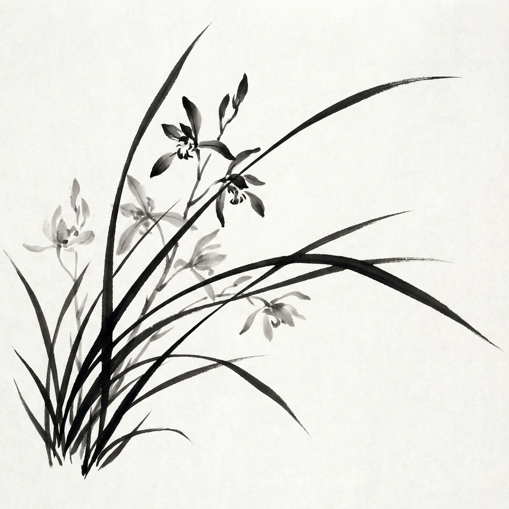
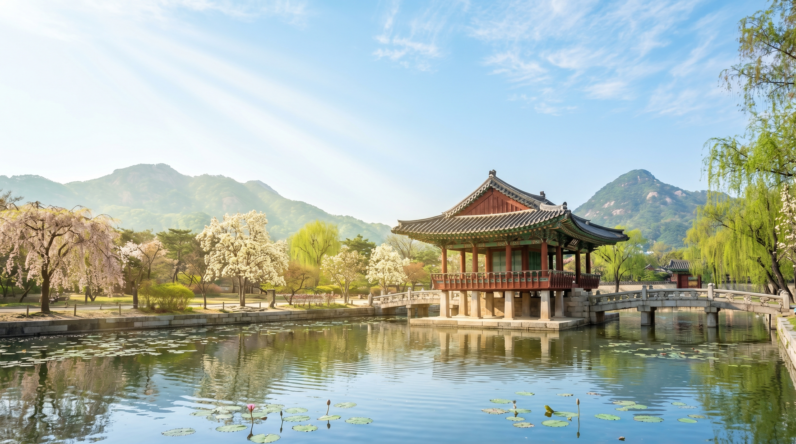
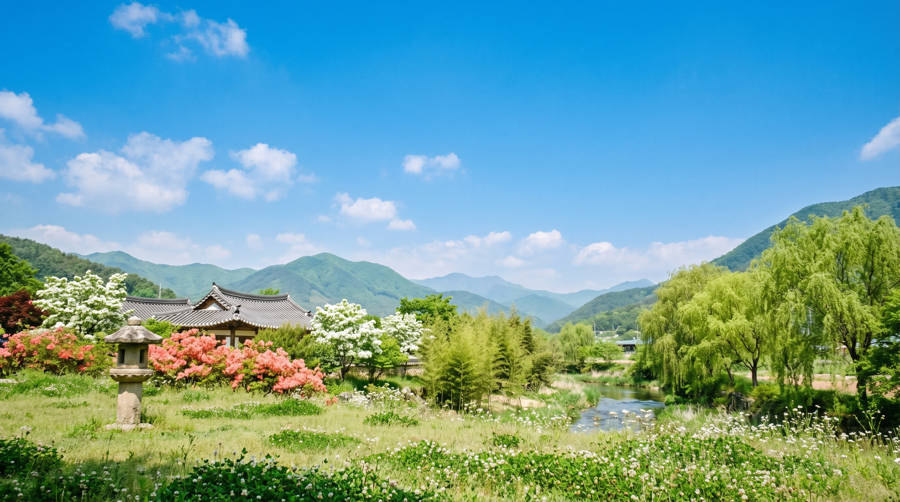
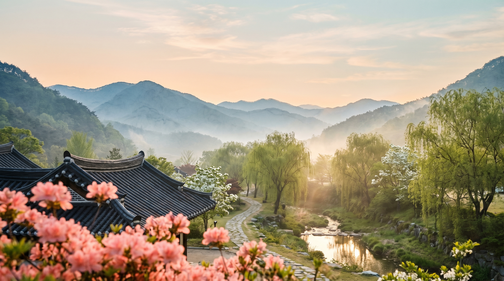
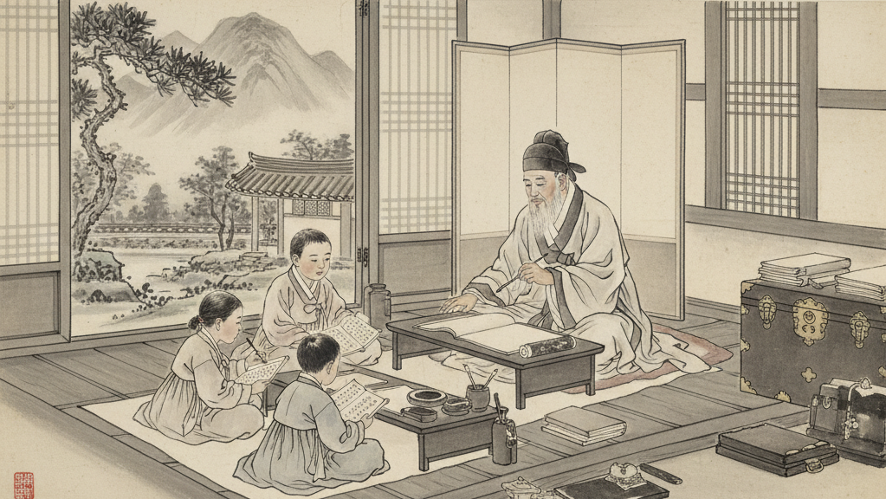
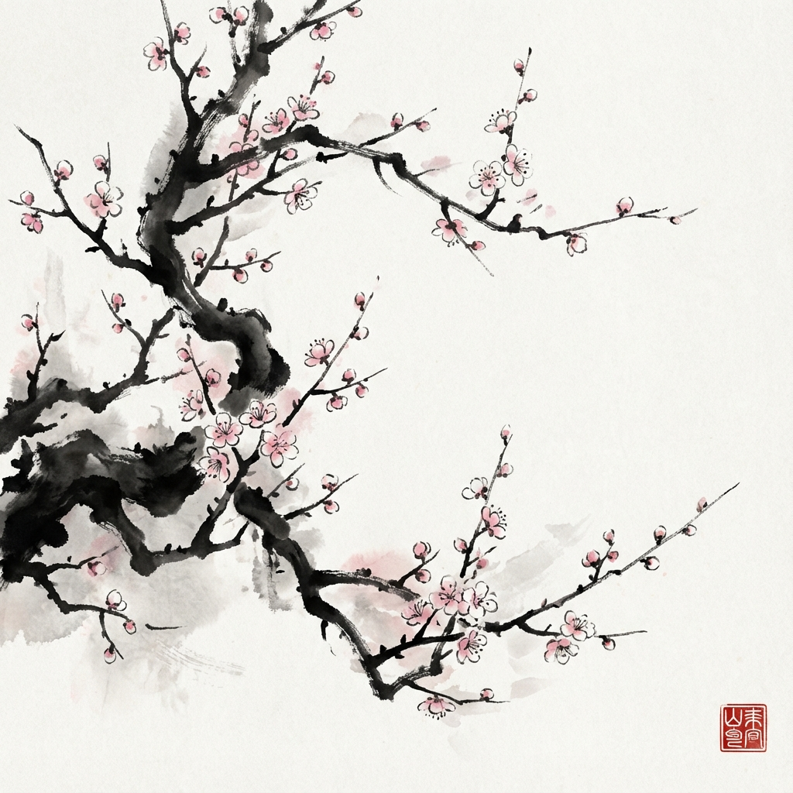
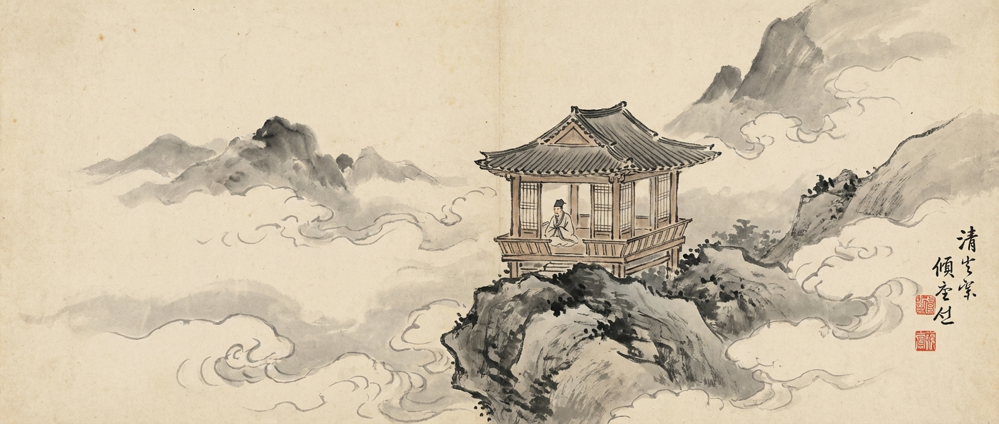
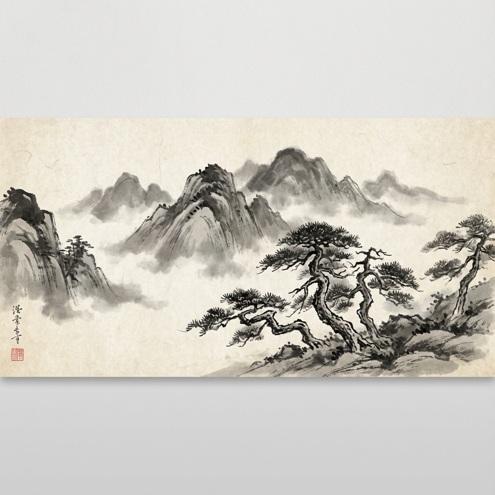
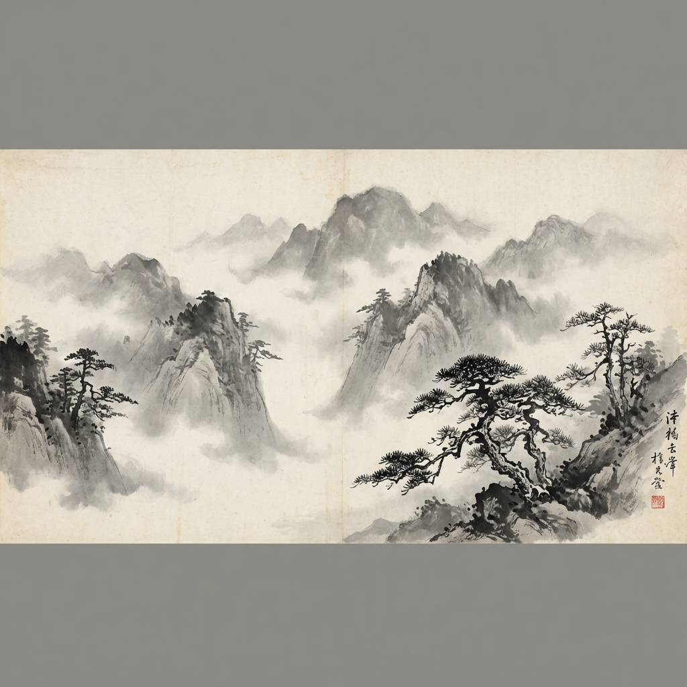

등록




오월의 푸르른 계절 스승의 날을 맞이하여 초대의 말씀을 올립니다.
저희 (사)한국 연정원에서는 "봉우 권태훈 사상의 철학적 지평과 현대적 의의"라는 주제를 가지고
2026년도 제3회 봉우학술대회를 마련하였습니다.
봉우(鳳宇) 권태훈(權泰勳, 1900~1994) 선생은 항일독립운동 활동과 사단법인 유도회(儒道會) 이사장, 대종교 총전교(總典敎)를 역임하였고, 충남대학교 초대 참사(이사)를 비롯하여 충청남도 교육위원회 위원활동과 지역 초중등학교를 설립하였으며 한국단학회연정원을 설립하는 등, 평생을 민족사상과 교육을 위해 힘쓴 한국 근현대 실천적 사상가입니다.
이러한 봉우 선생의 사상은 민족 고유의 사상과 정신문명을 충실히 계승하여 유불선도 등의 전통 사상의 요지를 현대의 후학들에게 전승하고 있는 측면에서 높이 평가되고 있습니다.
봉우 선생 철학사상의 가장 큰 특징은 요순(堯舜)임금이 서로 전한 심법인 정일집중 마음수양의 조식(調息)호흡법이 공맹과 소강절 정명도 주희를 비롯해, 조선유학에서도 목은 이색과 김굉필, 남명과 퇴계, 구봉과 율곡을 비롯한 대부분의 선유(先儒)들이 실천하고 있는데, 봉우선생은 이를 전통사상으로 계승하여 (사)한국 연정원을 설립하고, 후학들을 교육하여 현대 한국인문정신문화 유산으로 전승하고 있는 점을 들 수 있습니다.
아울러 일관되게 봉우선생 철학사상의 시종은 자신의 조식 수양을 통해 나아가 타인과 세계공동체의 도덕평화세계(대동세계) 구현에 귀결되고 있다는 점입니다.
이와 같은 봉우선생의 철학적 지평과 의의를 조명하는 학술대회를 개최하고자 합니다.
이에 봉우 권태훈 선생의 참된 사상과 실천 모습들,
그리고 학문적 성취와 지향했던 정신적 세계에 대한 자취를 되돌아보는 자리가 되어,
그 가치와 의의는 현대의 소중한 한국인문정신문화의 정수(精髓)로 삼기에 충분할 것입니다.
더욱이 이를 재조명하고 선양하기 위해 금번 학술대회는,
한국동서철학회와 공동으로 마련하여 의의가 크다고 생각합니다.
이 뜻깊은 자리에 내외귀빈 여러분을 모시고자 하오니,
바쁘시더라도 꼭 참석하시어 자리를 빛내주시기를 앙망합니다.
감사합니다.
2026년 05월 01일
(사)한국 연정원(硏精院) 이사장 성태용 드림
1부. 개회식 및 기조 강연 | 사회: 황수영 (남서울대학교)

국민의례, 봉우 권태훈 선생님 추원 묵념

개회사: 성태용 ((사)한국 연정원 이사장)
축 사: 조원일 (전남대학교 교수)
축 사: 소민호 (전 KAIST 도서관장, 연정원 대전지부장)

강연: 성태용 (건국대학교 철학과 명예교수, (사)한국 연정원 이사장)

봉우(鳳宇) 학술상 시상, 단체 사진 촬영

사회: 황인지 (충남대학교)

발표: 조남호 (국제뇌과학대학원대학교)
논평: 황종원 (단국대학교)

발표: 송석랑 (목원대학교)
논평: 황종원 (단국대학교)

발표: 황정희 (서강대학교)
논평: 김창경 (충남대학교)

발표: 이종성 (충남대학교)
논평: 조원일 (전남대학교)

기고: 정세근 (충북대학교)
좌장: 민황기 (청운대학교)
한국동서철학회
(사)한국 연정원(硏精院)
후원:
(사)한국 연정원(硏精院) 대전지부
봉우(鳳宇) 권태훈(權泰勳) 사상의
철학적 지평과 현대적 의의